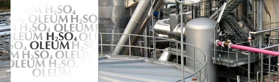
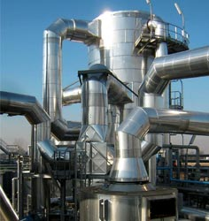

L’impianto per la produzione dell’Acido Solforico è attivo dall’ottobre 2006.
Dal Gennaio del 2008 Essemar SpA ha ottenuto la certificazione ISO 9001:2008 per il proprio Sistema di Gestione Qualità.
»
CERTIFICAZIONI
»
Documento Politica della Qualità Essemar